북한산은 100대 명산 도전의 출발점으로 가장 많이 선택되는 산입니다. 지하철 우이신설선 북한산우이역에서 걸어서 들머리까지 갈 수 있고, 왕복 4~5시간이면 정상을 다녀올 수 있습니다.
다만 '접근이 쉽다'와 '오르기 쉽다'는 다릅니다. 백운대 마지막 구간은 화강암 슬랩에 박힌 쇠줄과 난간을 잡고 올라야 하며, 비 온 뒤나 결빙기에는 초심자에게 확실히 부담이 됩니다.
코스가 워낙 다양해 같은 산을 여러 번 다르게 걸을 수 있다는 점도 장점입니다. 우이동에서 짧게 붙거나, 북한산성 계곡을 따라 길게 돌거나, 의상능선으로 암릉을 즐기는 식으로 난도를 조절할 수 있습니다.
등반기록
북한산성 입구 → 계곡길 → 위문 → 백운대(정상) → 같은 길로 하산
북한산성 입구에서 출발
아침 6시 13분, 북한산성 입구에서 출발했어요. 입구 안내판에서 백운대 코스를 확인하고 계곡길로 들어섰어요.
등산 코스는 북한산성 입구 → 계곡길 → 위문 → 백운대(정상) → 같은 길로 하산.
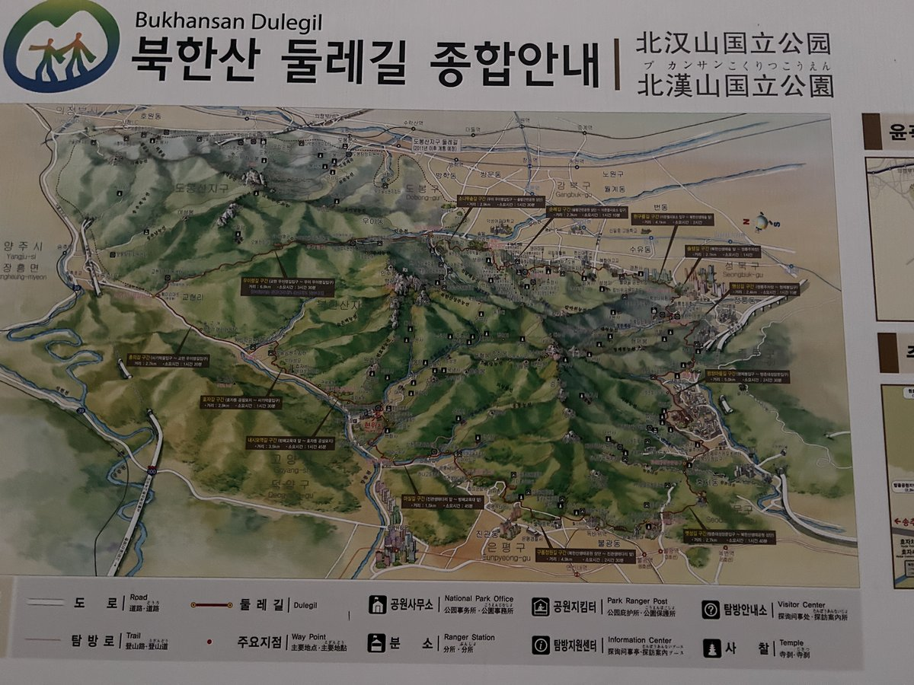
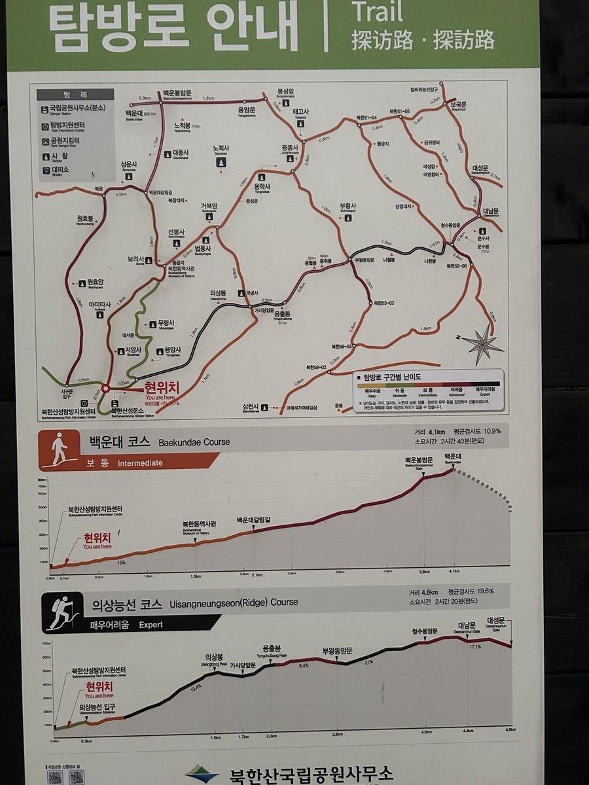
백운대 정상, 837m
8시 52분쯤 백운대에 닿았어요. 출발한 지 2시간 40분 만이에요. 태극기가 서 있는 정상 바위에서 인증샷을 남겼어요.
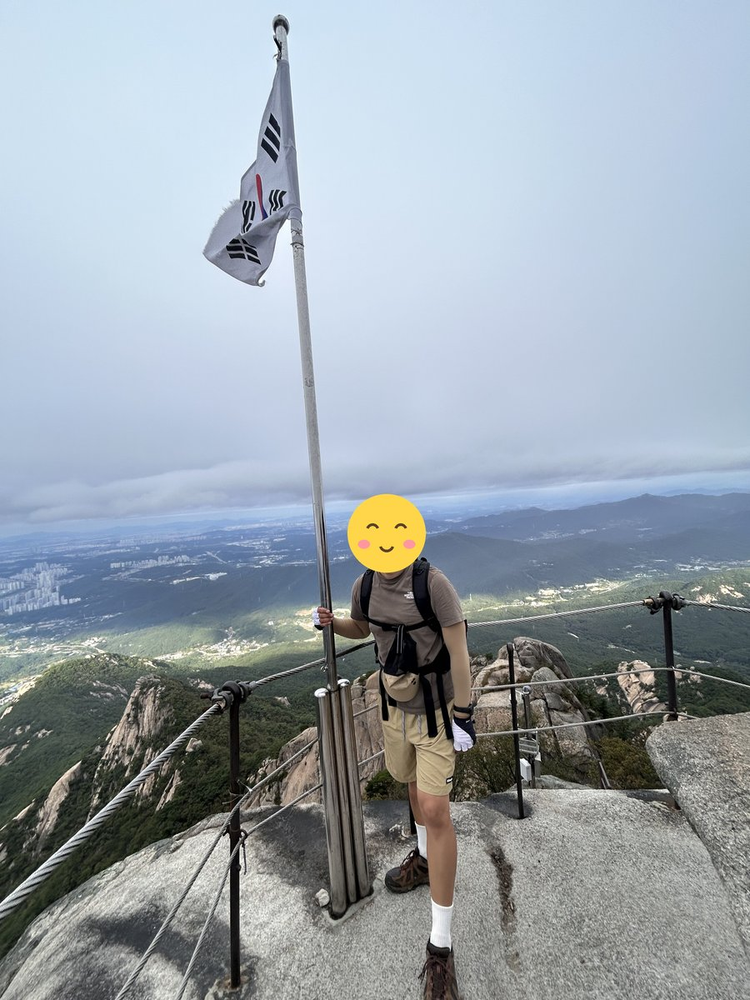
정상에서 내려다본 풍경
하늘은 구름이 낮게 깔려 흐렸지만, 구름 아래로는 시야가 트여서 서울 시내가 한눈에 내려다보였어요. 반대편으로는 바위 봉우리와 능선이 겹겹이 이어져요.
정상에서 40분 가까이 머물며 사방을 둘러봤어요.
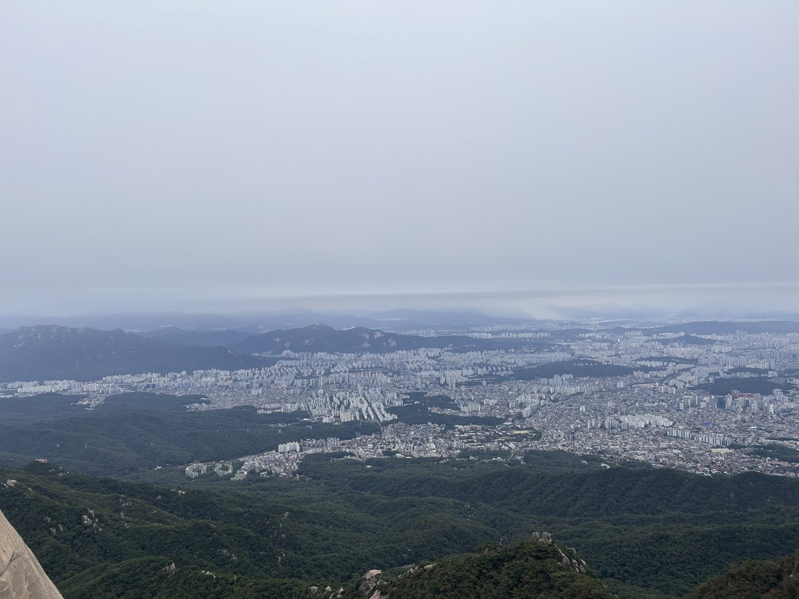
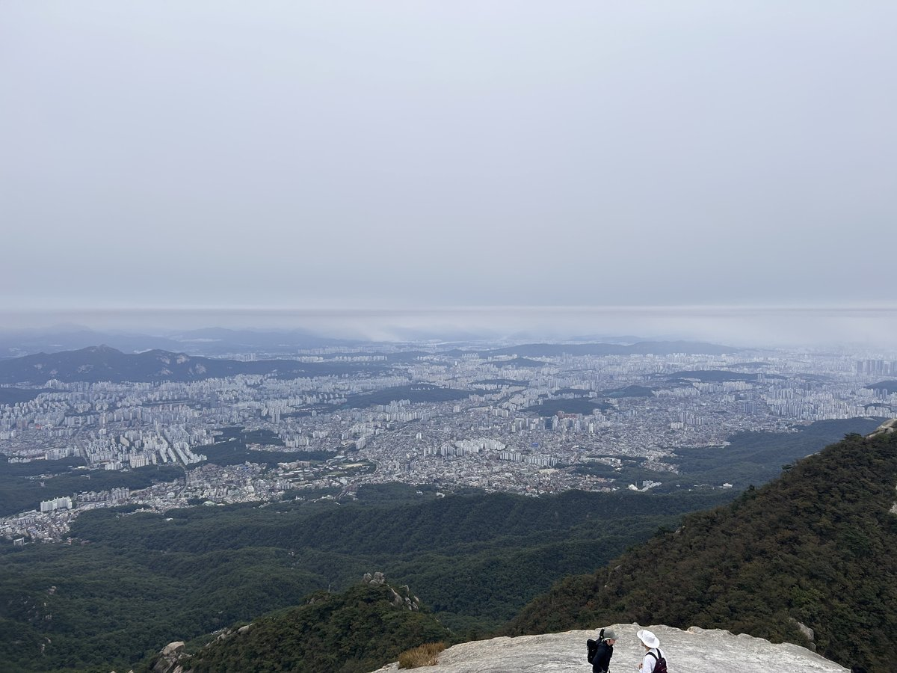
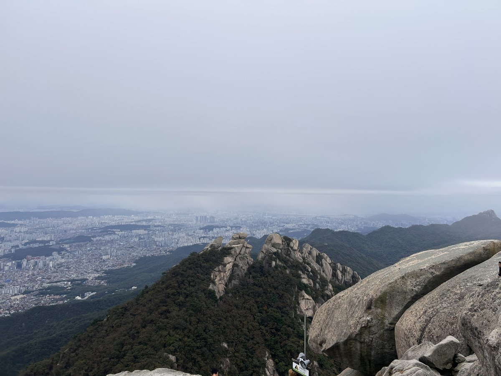
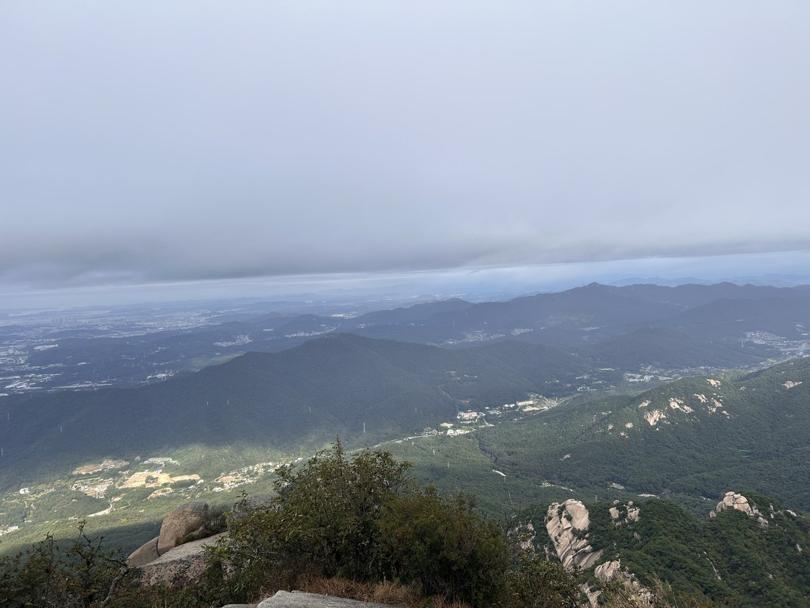
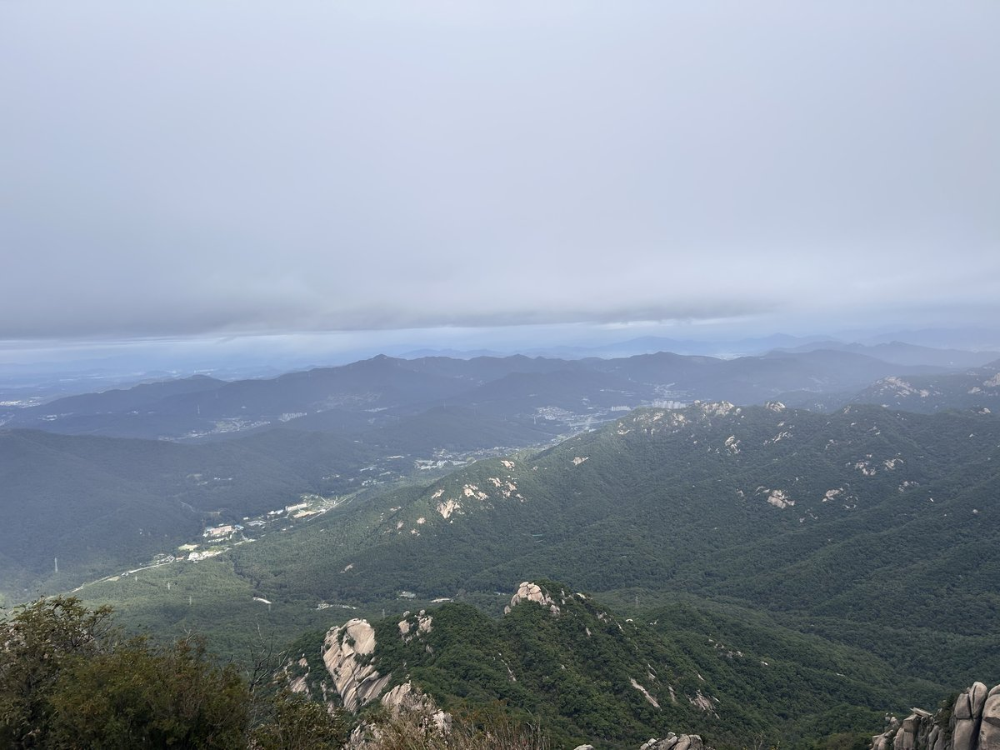
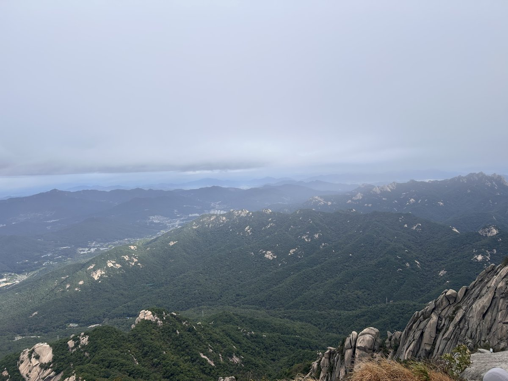
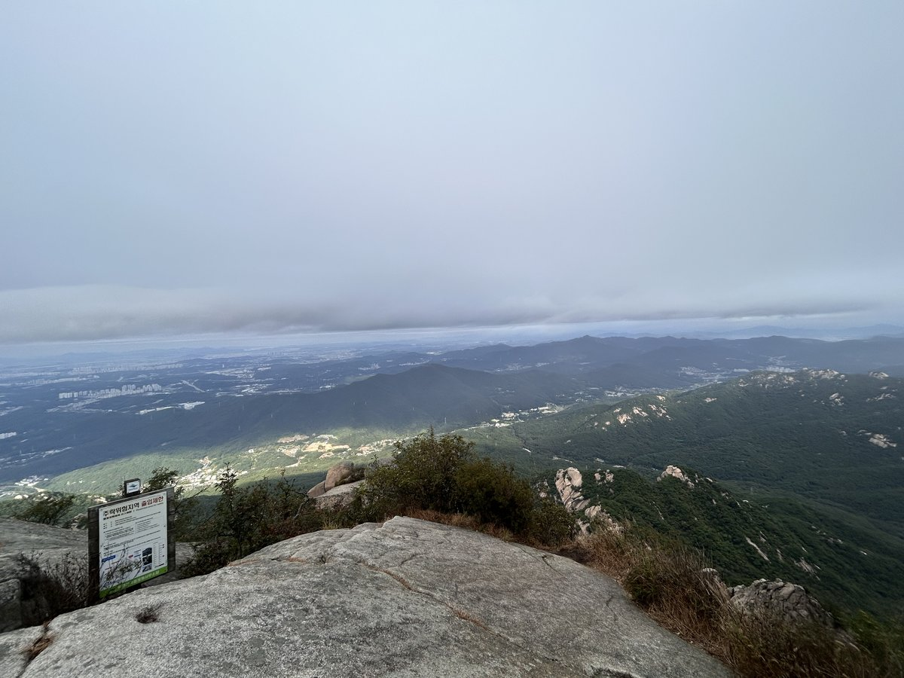
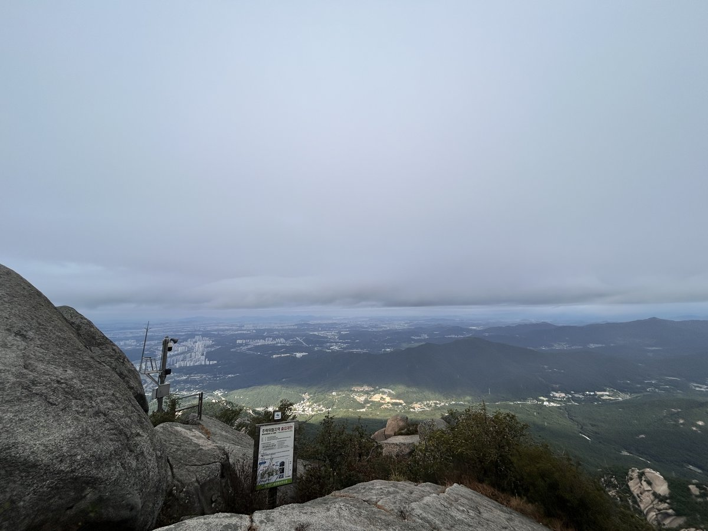
올라온 길로 하산
올라온 길로 그대로 내려와 11시 34분에 마쳤어요. 총 9.96km, 5시간 20분이 걸렸어요.
거리와 시간은 GPS 기록으로 계산한 값이에요.
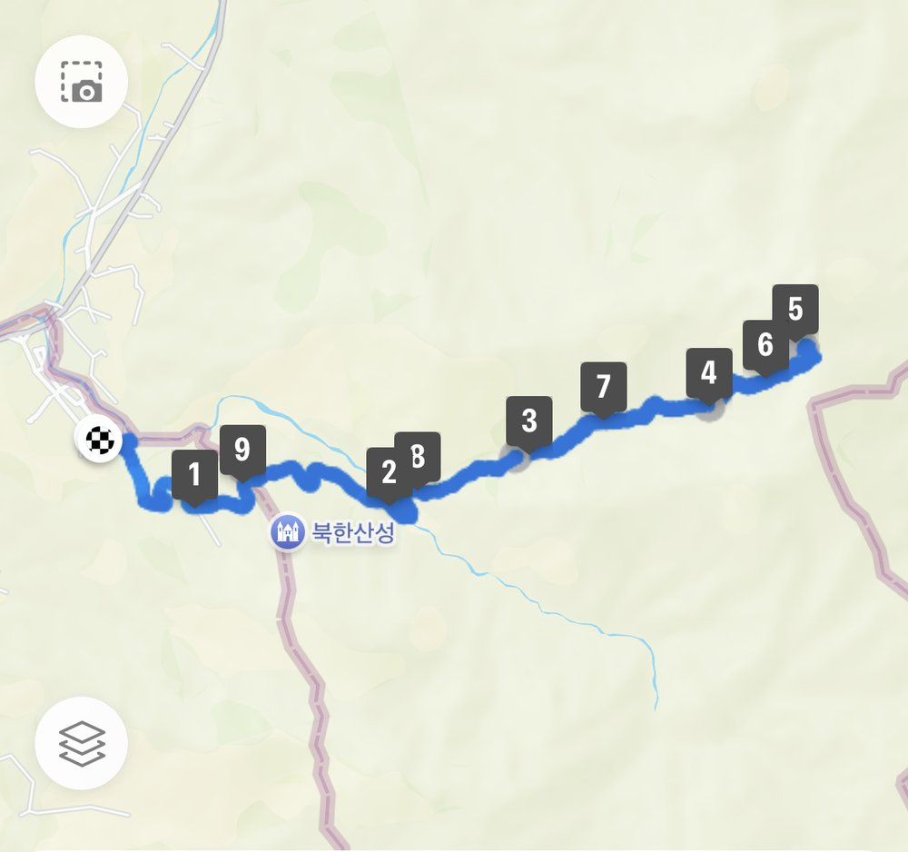
이 산의 포인트
- 백운대(837m) — 서울 도심을 발밑에 두는 정상 조망
- 마지막 구간은 쇠줄·난간 구간, 장갑 권장
- 지하철 접근 가능 — 100대 명산 중 최고 수준의 접근성
- 주말 정상부는 정상석 촬영 대기 줄이 생길 만큼 붐빔
등산 코스
| 코스 | 거리 | 소요 | 난이도 |
|---|---|---|---|
| 우이동 코스 (최단·입문) 북한산우이역 → 도선사 입구 → 하루재 → 백운대피소 → 위문 → 백운대 |
약 8km(왕복) | 4~5시간(왕복) | 중 |
| 북한산성 코스 🥾 나의 기록 북한산성탐방지원센터 → 대서문 → 보리사 → 위문 → 백운대 |
약 9km(왕복) | 5시간 내외 | 중 |
| 의상능선 연계 북한산성 → 의상봉 → 용출봉 → 나월봉 → 대남문 → 백운대 |
약 12km | 7시간 내외 | 상 |
인증장소
백운대 정상에서 인증합니다. 정상부가 좁은 바위라 주말에는 대기가 생기며, 위험한 자세로 촬영하지 않도록 주의해야 합니다.
가는 길
- 자가용
- 도선사 입구·북한산성 입구 주차장이 있으나 주말 오전이면 대부분 만차입니다.
- 대중교통
- 우이신설선 북한산우이역 도보 접근이 가장 편합니다. 북한산성 방면은 3호선 구파발역에서 버스 환승.
주차장
- 북한산성탐방지원센터 주차장경기 고양시 덕양구 북한동
백운대 최단 코스의 들머리입니다. 주말에는 오전 8시 전에 만차입니다.
- 도선사 주차장(우이동)서울 강북구 우이동
하루재를 거쳐 백운대로 붙는 코스입니다. 우이신설선 북한산우이역에서 걷는 편이 편할 때가 많습니다.
- 정릉탐방지원센터 주차장서울 성북구 정릉동
보국문·대성문 방면 들머리입니다.
주차 요금과 면수는 자주 바뀌고 성수기에는 임시 주차장·셔틀이 운영되기도 합니다. 출발 전에 지도 앱이나 공원 사무소로 한 번 더 확인하세요.
맛집
서울·고양 경계라 향토음식은 없지만, 북한산성 입구는 오래된 등산 상권이라 두부·도토리묵·파전 집이 늘어서 있습니다. 은평 쪽에는 코다리조림과 쌈밥 집이 모여 있습니다.
- 가야밀냉면해물칼국수들머리에서 1.5km서울특별시 은평구 대서문길 36 (진관동)
- 김봉창 코다리들머리에서 2.8km경기도 고양시 덕양구 북한산로 515 (효자동)
- 북한산숯불고기들머리에서 3.9km경기도 고양시 덕양구 북한산로 639 (지축동)
- 대보명가들머리에서 4.1km서울특별시 강북구 4.19로 69
- 강촌쌈밥들머리에서 4.1km서울특별시 종로구 평창30길 9
한국관광공사에 등록된 음식점입니다. 맛집 순위가 아니며, 영업시간과 휴무일은 바뀔 수 있으니 먼 길이라면 미리 전화해 보세요.
언제 가면 좋은가
사계절 모두 좋지만 10~11월 단풍철 주말은 극심하게 붐빕니다. 겨울 결빙기에는 백운대 직전 바위 구간이 미끄러워 아이젠이 필요하고, 여름에는 그늘이 적은 암반 구간의 반사열에 유의해야 합니다.
알아두면 좋은 것
- 마지막 쇠줄 구간 때문에 목장갑·등산장갑을 꼭 챙기세요.
- 미끄러운 화강암 슬랩이 많아 접지력이 남은 등산화가 중요합니다.
- 붐비는 시간을 피하려면 평일 또는 주말 오전 7시 이전 출발을 권합니다.
- 가까운 산이라 준비를 가볍게 하기 쉽지만, 물과 행동식은 정상 왕복 기준으로 챙기세요.